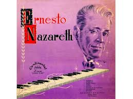

A música brasileira é uma mistura rica de influências, incluindo ritmos e estilos trazidos por imigrantes europeus. Alguns exemplos incluem:
Brejeiro
Artista: Ernesto Nazareth
Ano de Lançamento: 1893
Tango brasileiro alegre e elegante, mistura música popular e erudita, sendo um marco do choro.

Corta Jaca
Artista: Chiquinha Gonzaga
Ano de Lançamento: 1897
Ritmo animado e dançante, mistura de maxixe e choro; inovou ao levar música popular aos salões da elite.

Odeon
Artista: Ernesto Nazareth
Ano de Lançamento: 1910
Peça sofisticada e melódica, com ritmo suave e nostálgico, símbolo da fusão entre o popular e o erudito

Noites Cariocas
Artista: Jacob do Bandolim
Ano de Lançamento: 1957
Choro expressivo e virtuoso, representa o clima boêmio e alegre das rodas de choro do Rio de Janeiro.